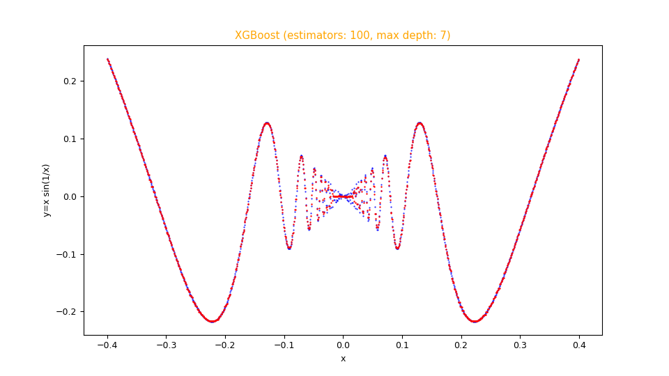

Fitting functions with a configurable XGBoost regressor
This post deals with the approximation of both scalar and vector real-valued mathematical functions to one or more real-valued variables using a XGBoost regressor without writing code but only acting on the command line of Python scripts that implement the functionality of:
- Regressor Configuration and training
- Prediction and error calculation
For the generation of synthetic training and test datasets, the following common tools (available in the repository) will be used:
-
fx_gen.pyfor the real-valued scalar functions of one real-valued variable $f(x) \colon [a,b] \to {\rm I\!R}$ -
fxy_gen.pyfor the real-valued scalar functions of two real-valued variables $f(x,y) \colon [a,b] \times [c,d] \to {\rm I\!R}$ -
pcm2t_gen.pyfor parametric curves on the plane, so real-valued vector functions $f(t) \colon [a,b] \to {\rm I\!R \times \rm I\!R}$ -
pmc3t_gen.pyfor parametric curves in space, so real-valued vector functions $f(t) \colon [a,b] \to {\rm I\!R \times \rm I\!R \times \rm I\!R}$
-
fx_scatter.pyfor the real scalar generator functions of one real variable -
fxy_scatter.pyfor the real scalar generator functions of two real variables -
pmc2t_scatter.pyfor parametric curves on the plane -
pmc3t_scatter.pyfor parametric curves in space
Regressor Configuration and training
In this chapter the programs
fit_func_miso.py and
fit_func_mimo.py are presented
and they are technically wrappers of the class XGBRFRegressor
of the XGBoost library and which purpose is to allow the use of the regression of the underlying regressor to fit functions
without having to write code but only acting on the command line.
In fact through the argument --xgbparams the user passes a series of hyper-parameters to adjust the behavior of the underlying XGBoost regressor algorithm
and others to configure its learning phase.
In addition to the parameters of the underlying regressor the two programs support their own arguments to allow the user to pass
the training dataset and optionally the validation dataset, on which file to save the trained model, the metrics to calculate during the training,
constraints for regularization (e.g. early stop) and parameters for diagnostic.
The program fit_func_miso.py, as well as the underlying XGBoost regressor, is of type M.I.S.O., i.e. Multiple Input Single Output:
it is designed to fit a function of the form $f \colon \rm I\!R^n \to \rm I\!R$ where the number of independent variables is arbitrarily large
while the output dependent variable is only one.
The format of the input datasets is in csv format (with header), with n + 1 columns, of which the first n ones contain the values of the n independent variables and
the last column, the n+1, containing the values of the dependent variable.
The program fit_func_mimo.py, using in the implementation
the sklearn.multioutput.MultiOutputRegressor class,
is of type M.I.M.O., i.e. Multiple Input multiple Output:
it is designed to fit a function of the form $f \colon \rm I\!R^n \to \rm I\!R^m$ where the number of independent variables is arbitrarily large
while the output dependent variable is only one.
The format of the input datasets is in csv format (with header), with $n+m$ columns, of which the first $n$ columns contain the values of the $n$ independent variables and
the last $m$ containing the values of the dependent variables.
Usage of the fit_func_miso.py program
To get the program usage you can run this following command:
$ python fit_func_miso.py --helpusage: fit_func_miso.py [-h] [--version] --trainds TRAIN_DATASET_FILENAME
--modelout MODEL_FILE [--valds VAL_DATASET_FILENAME]
[--metrics VAL_METRICS [VAL_METRICS ...]]
[--dumpout DUMPOUT_PATH]
[--earlystop EARLY_STOPPING_ROUNDS]
[--xgbparams XGB_PARAMS]
fit_func_miso.py fits a multiple-input single-output scalar function dataset
using a configurable XGBoost
optional arguments:
-h, --help show this help message and exit
--version show program's version number and exit
--trainds TRAIN_DATASET_FILENAME
Train dataset file (csv format)
--modelout MODEL_FILE
Output model file
--valds VAL_DATASET_FILENAME
Validation dataset file (csv format)
--metrics VAL_METRICS [VAL_METRICS ...]
List of built-in evaluation metrics to apply to
validation dataset
--dumpout DUMPOUT_PATH
Dump directory (directory to store metric values)
--earlystop EARLY_STOPPING_ROUNDS
Number of round for early stopping
--xgbparams XGB_PARAMS
Parameters of XGBoost constructor-
-h, --help: shows the usage of the program and ends the execution.
-
--version: shows the version of the program and ends the execution.
-
--trainds: path (relative or absolute) of a two-column csv file (with header) that contains the dataset to be used for the training;
this file can be generated synthetically e.g. via the program
fx_gen.py. or be a dataset actually obtained by measuring a scalar and real phenomenon that depends on a single real-valued variable.
-
--modelout: path (relative or absolute) to a file where to save the trained model in joblib format (.jl).
-
--valds: path (relative or absolute) of a two-column csv file (with header) that contains the dataset to be used for validation.
-
--metrics: list of metrics to be calculated on the training dataset and, if present, also on the validation dataset;
the list of supported metrics is defined in XGBoost Parameters.
under eval_metric.
-
--dumpout: path (relative or absolute) of the directory where to save the metric values as the ages go by;
the program
dumps_scatter.pywill use the contents of this directory to display the metric graphs.
-
--earlystop: how many iterations can be performed before the algorithm begins to enter the overfitting phase.
-
--xgbparams: list of parameters to pass to XGBoost regression algorithm; see documentation of
XGBRegressor.
Usage of the fit_func_mism.py program
To get the program usage you can run this following command:
$ python fit_func_mimo.py --helpusage: fit_func_mimo.py [-h] [--version] --trainds TRAIN_DATASET_FILENAME
--outputdim NUM_OF_DEPENDENT_COLUMNS --modelout
MODEL_FILE [--dumpout DUMPOUT_PATH]
[--xgbparams XGB_PARAMS]
fit_func_mimo.py fits a multiple-input single-output (scalar) function dataset
using a configurable XGBoost
optional arguments:
-h, --help show this help message and exit
--version show program's version number and exit
--trainds TRAIN_DATASET_FILENAME
Train dataset file (csv format)
--outputdim NUM_OF_DEPENDENT_COLUMNS
Output dimension (alias the number of dependent
columns, that must be last columns)
--modelout MODEL_FILE
Output model file
--dumpout DUMPOUT_PATH
Dump directory (directory to store metric values)
--xgbparams XGB_PARAMS
Parameters of XGBoost constructor-
-h, --help: shows the usage of the program and ends the execution.
-
--version: shows the version of the program and ends the execution.
-
--trainds: path (relative or absolute) of a two-column csv file (with header) that contains the dataset to be used for the training;
this file can be generated synthetically e.g. via the program
fx_gen.py. or be a dataset actually obtained by measuring a scalar and real phenomenon that depends on a single real-valued variable.
-
--outputdim:
the $n$ number of independent variables that are the first $n$ columns of the csv dataset;
the rest of the columns on the right are the $m$ dependent variables accordingly.
-
--modelout: path (relative or absolute) to a file where to save the trained model in joblib format (.jl).
-
--dumpout: path (relative or absolute) of the directory where to save the metric values as the ages go by;
the program
dumps_scatter.pywill use the contents of this directory to display the metric graphs.
-
--xgbparams: list of parameters to pass to XGBoost regression algorithm; see documentation of
XGBRegressor.
Prediction and error calculation
In this chapter the programs
predict_func_miso.py and
predict_func_miso.py are presented
and which purpose is to make predictions on a test dataset applying it to a previously trained XGBoost regressor model
respectively via the programs
fit_func_miso.py and
fit_func_mimo.py,
always without having to write code but only through the command line.
In fact, the two programs support arguments through which the user passes the previously trained model, the test dataset
and the error measurements to be calculated between the predictions and the true values.
The format of the incoming test datasets is identical to the ones rispectively of the programs fit_func_miso.py and fit_func_mimo.py;
of course the last columns (related to the dependent variables) are only used to compare the predicted values with the true values by calculating passed error measurements.
Usage of the predict_func_miso.py program
To get the program usage you can run this following command:
$ python predict_func_miso.py --helpusage: predict_func_miso.py [-h] [--version] --model MODEL_FILE --ds
DF_PREDICTION --predictionout PREDICTION_DATA_FILE
[--measures MEASURES [MEASURES ...]]
predict_func_miso.py makes prediction of the values of a multiple-input
single-output (scalar) function with a pretrained XGBoost model
optional arguments:
-h, --help show this help message and exit
--version show program's version number and exit
--model MODEL_FILE model file
--ds DF_PREDICTION dataset file (csv format)
--predictionout PREDICTION_DATA_FILE
prediction data file (csv format)
--measures MEASURES [MEASURES ...]
List of built-in sklearn regression metrics to compare
prediction with input dataset-
-h, --help: shows the usage of the program and ends the execution.
-
--version: shows the version of the program and ends the execution.
-
--model: path (relative or absolute) to the file in joblib (.jl) format of the model generated by
fit_func_miso.py.
-
--ds: path (relative or absolute) of the csv file (with header) that contains the input dataset on which to calculate the prediction.
-
--predictionout: path (relative or absolute) of the csv file to generate that will contain the prediction, that is the approximation of the function applied to the input dataset.
-
--measures: list of measurements to be calculated by comparing the true values of the input dataset and the predicted output values;
the list of supported metrics is defined in SciKit Learn Regression Metrics.
Usage of the predict_func_mimo.py program
To get the program usage you can run this following command:
$ python predict_func_mimo.py --helpusage: predict_func_mimo.py [-h] [--version] --model MODEL_FILE --ds
DF_PREDICTION --outputdim NUM_OF_DEPENDENT_COLUMNS
--predictionout PREDICTION_DATA_FILE
[--measures MEASURES [MEASURES ...]]
predict_func_mimo.py makes prediction of the values of a multiple-input
single-output (scalar) function with a pretrained XGBoost model
optional arguments:
-h, --help show this help message and exit
--version show program's version number and exit
--model MODEL_FILE model file
--ds DF_PREDICTION dataset file (csv format)
--outputdim NUM_OF_DEPENDENT_COLUMNS
Output dimension (alias the number of dependent
columns, that must be last columns)
--predictionout PREDICTION_DATA_FILE
prediction data file (csv format)
--measures MEASURES [MEASURES ...]
List of built-in sklearn regression metrics to compare
prediction with input dataset-
-h, --help: shows the usage of the program and ends the execution.
-
--version: shows the version of the program and ends the execution.
-
--model: path (relative or absolute) to the file in joblib (.jl) format of the model generated by
fit_func_miso.py.
-
--ds: path (relative or absolute) of the csv file (with header) that contains the input dataset on which to calculate the prediction.
-
--outputdim:
the $n$ number of independent variables that are the first $n$ columns of the csv dataset;
the rest of the columns on the right are the $m$ dependent variables accordingly.
-
--predictionout: path (relative or absolute) of the csv file to generate that will contain the prediction, that is the approximation of the function applied to the input dataset.
-
--measures: list of measurements to be calculated by comparing the true values of the input dataset and the predicted output values;
the list of supported metrics is defined in SciKit Learn Regression Metrics.
An example of using of all the programs
Suppose you want to approximate the function $$f(x)=x sin \frac{1}{x}$$ in the range $[-0.4,0.4]$ Keeping in mind that np is the alias of NumPy library, the translation of this function in lambda body Python syntax is:
x * np.sin(1 / x)$ python fx_gen.py \
--dsout mytrain.csv \
--funcx "x * np.sin(1 / x)" \
--xbegin -0.4 \
--xend 0.4 \
--xstep 0.00031$ python fx_gen.py \
--dsout mytest.csv \
--funcx "x * np.sin(1 / x)" \
--xbegin -0.4 \
--xend 0.4 \
--xstep 0.00073To this we intend to make a regression by
fit_func_miso.py
passing to the underlying regressor: n_estimators: 100, max_depth: 7;
then run the following command:
$ python fit_func_miso.py \
--trainds mytrain.csv \
--modelout mymodel.jl \
--xgbparams "'n_estimators': 100, 'max_depth': 7"Now we intend to perform the prediction and calculation of the error using the measurements mean_absolute_error and mean_squared_error; then execute the following command:
$ python predict_func_miso.py \
--model mymodel.jl \
--ds mytest.csv \
--predictionout mypred.csv \
--measures mean_absolute_error mean_squared_error--measures
and they are very small: the first one around $1.5 \cdot 10^{-3}$ and the second one around $5.5 \cdot 10^{-6}$Note: Given the stochastic nature of the training phase, your specific results may vary. Consider running the training phase a few times.
Finally you want to make the comparative display of the test dataset with the prediction; therefore run the following command:
$ python fx_scatter.py \
--ds mytest.csv \
--prediction mypred.csv \
--title "XGBoost (estimators: 100, max depth: 7)" \
--xlabel "x" \
--ylabel "y=x sin(1/x)"Note: Given the stochastic nature of the training phase, your specific results may vary. Consider running the training phase a few times.

Figure with dispersion graphs generated by the program
fx_scatter.py showing the fitting in red overlay of the function $f(x)=x sin \frac{1}{x}$
and the original function below in blue.The repository contains examples in shell scripts that show the use of these cascading programs:
-
one-variable-function/xgboost/examplesfor examples on the fitting of real-valued scalar functions of one real-valued variable via XGBoost. -
two-variables-function/xgboost/examplesp for examples on the fitting of real-valued scalar functions of two real-valued variables via XGBoost. -
parametric-curve-on-plane/xgboost/examplesfor examples about fitting parametric curves on the plane via XGBoost. -
parametric-curve-in-space/xgboost/examplesfor examples about fitting parametric curves on the space via XGBoost.
Download of the complete code
The complete code is available at GitHub.
These materials are distributed under MIT license; feel free to use, share, fork and adapt these materials as you see fit.
Also please feel free to submit pull-requests and bug-reports to this GitHub repository or contact me on my social media channels available on the top right corner of this page.